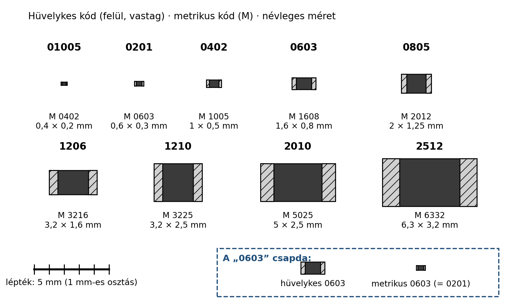
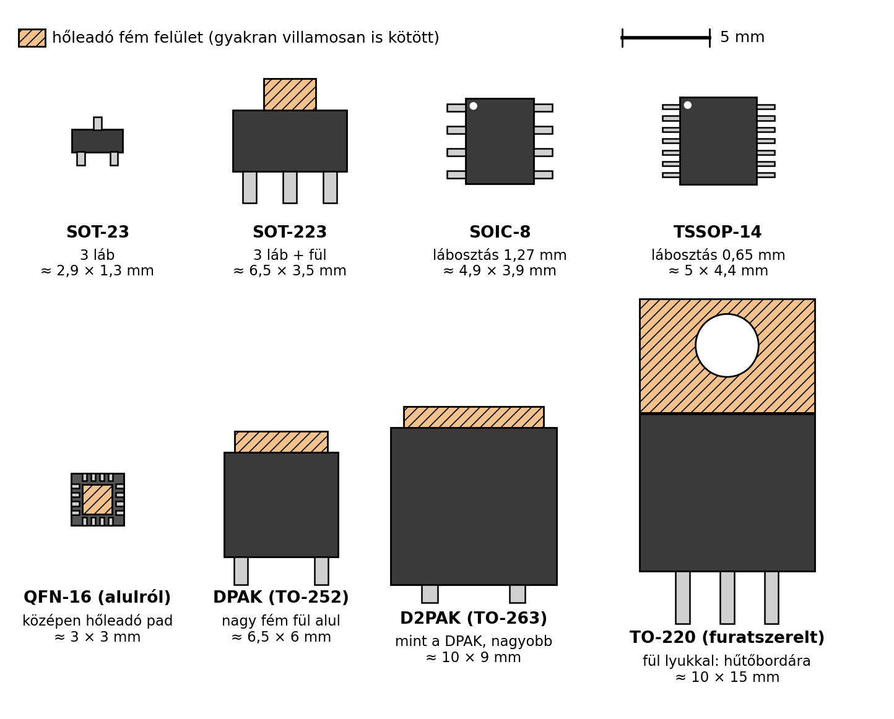
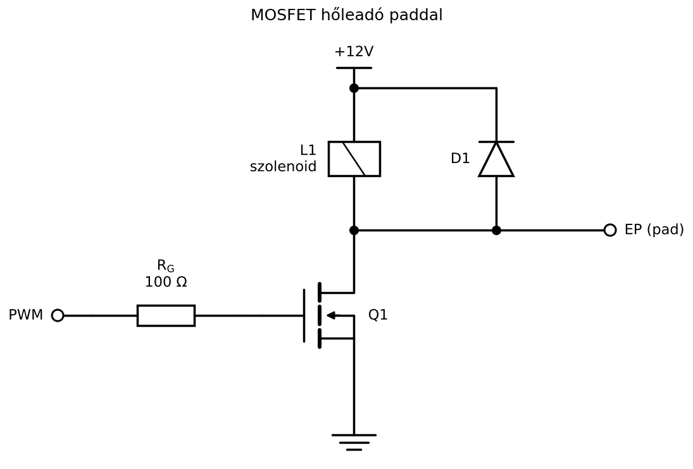

Ebben az alfejezetben megtanulod értelmezni az alkatrész tokját (package): a felületszerelt passzív alkatrészek méretkódjait (és a leggyakoribb csapdájukat), a fő félvezetőtok-családokat, és azt, hogy a tok hogyan szabja meg a terhelhetőséget, a feszültségtűrést és a nem kívánt induktivitást. A cél a tokválasztás indoklással; a nyomtatott lap rajzolása nem tárgyunk. Előfeltétel: Teljesítmény, hőfoktényező, feszültségtűrés és típusok.
Az előző alfejezetben kiszámoltuk, hogy a szenzormodul 12 V-os tápjelző előtétje (2 kΩ) a 1206-os méretben felel meg; az 1 W-os söntellenállás pedig nagyobb, 2512-es tokot kap majd. A MOSFET (az elektronikus kapcsoló, A MOSFET működése és adatlapja) az alkatrészjegyzékben „SOT-23” megjelöléssel szerepel. Mit jelentenek ezek a betűk és számok? Mi történik, ha a beszerző „0603-as” ellenállást rendel, de a szállító más mértékegységrendszerben érti? A rossz tok nem csak nem fér a helyére: kisebb teljesítményt bír, vagy más lábkiosztású.
A tok az alkatrész burkolata és kivezetései. A belső lapka vagy réteg kicsi; a tok dönti el, milyen gyorsan jut ki belőle a hő, milyen messze vannak egymástól a kivezetések, és milyen hosszú a vezeték, amelyen az áram befolyik. Gondolj egy radiátorra: a nagyobb felület ugyanakkora hőt kisebb hőmérséklet-emelkedéssel ad le. A hasonlat korlátja, hogy a kis alkatrészek hőjének nagy része nem a levegőbe, hanem a kivezetéseken át a nyomtatott lap rezébe megy.
Gondolkodj előre: a 1206-os passzív tok alapterülete körülbelül négyszerese a 0603-asénak. Mit gondolsz, a megengedett teljesítménye is négyszeres? Az alábbi táblázatban ellenőrizheted.

Definíció. A furatszerelt (through-hole technology, THT) alkatrész huzalkivezetéseit a lap furatain vezetik át; a felületszerelt (surface-mount device, SMD) alkatrész a lap felületére forrasztott, kivezetés nélküli vagy rövid kivezetésű.
| Szempont | THT | SMD |
|---|---|---|
| méret | nagy | kicsi, sűrűn szerelhető |
| próbapanel | közvetlenül használható | csak adapterlappal |
| kézi kezelés | könnyű | 0603 alatt nehéz |
| parazita induktivitás | nagy (hosszú lábak) | kicsi |
| mechanikai szilárdság | jó (csatlakozó, nagy alkatrész) | kisebb alkatrésznél jó |
| gyártás | sok kézi vagy külön lépés | automatizált beültetés |
A téglatest alakú SMD ellenállások, kondenzátorok (és sok induktivitás) méretét négyjegyű (a legkisebbnél ötjegyű) kód adja: két jegy a hossz, két jegy a szélesség.
Ugyanaz a chip tehát hüvelykesen 1206, metrikusan 3216. A kódok névleges értékek; a tényleges méretet és tűrést az adatlap adja.
| Hüvelykes | Metrikus | Méret [mm] | [mW] | [V] |
|---|---|---|---|---|
| 01005 | 0402 | 0,4 × 0,2 | – | – |
| 0201 | 0603 | 0,6 × 0,3 | – | – |
| 0402 | 1005 | 1,0 × 0,5 | 63 | 50 |
| 0603 | 1608 | 1,6 × 0,8 | 100 | 75 |
| 0805 | 2012 | 2,0 × 1,25 | 125 | 150 |
| 1206 | 3216 | 3,2 × 1,6 | 250 | 200 |
| 1210 | 3225 | 3,2 × 2,5 | – | – |
| 2010 | 5025 | 5,0 × 2,5 | – | – |
| 2512 | 6332 | 6,3 × 3,2 | 1000 | 200 |
A teljesítmény és feszültség vastagréteg-ellenállás
mintaadata (70 °C-ig;
(ellenőrizendő: gyártói adatlap)); a „–” cellákra nem adunk
számot. A méretek is adatlapfüggők lehetnek (a 2512 metrikus kódja egyes
gyártóknál 6432).
A csapda: a „0402” és a „0603” mindkét rendszerben létező kód, de mást jelent. A hüvelykes 0603 = 1,6 × 0,8 mm; a metrikus 0603 = 0,6 × 0,3 mm (hüvelykesen 0201), lineárisan harmadakkora. Ezért az alkatrészjegyzékben mindig írd ki a rendszert, például: „0603 (1608 metrikus)”.
A 1206 alapterülete mm², a 0603-é mm²: négyszeres. A mintaadatban a névleges teljesítmény mégis csak 2,5-szeres (250 mW és 100 mW), mert a hő a kivezetéseken és a lap rezén is távozik, és ez nem a chip területével arányos. A feszültséghatár a kivezetések közti távolsággal nő, mert ugyanakkora feszültség nagyobb úton oszlik el, és a felületen is hosszabb az út az egyik fémvégtől a másikig. Ez az úgynevezett kúszóút gondolata (Szigetelési távolság és kúszóút).
Minden vezetőnek van induktivitása (): az áram gyors változásakor a vezetőn feszültség keletkezik (Mágneses tér és induktivitás):
Szavakkal: minél nagyobb az és minél gyorsabban változik az áram, annál nagyobb a nem kívánt feszültség. Dimenzió: (H a henry). Hüvelykujjszabályként egy milliméter vékony huzalvezető nagyságrendben 1 nH induktivitású (a tényleges érték erősen függ a geometriától és a visszavezető útjától). Egy lábas ellenállás 2 × 8 mm kivezetése így nagyjából 15–20 nH, egy kis SMD chip ezzel szemben 1 nH körüli (nagyságrendi becslés). Ha az áram 10 ns alatt 1 A-t változik, 20 nH-n V jelenik meg, 1 nH-n csak 0,1 V. Egy 3,3 V-os logikában 2 V már hibás működést okozhat. Lassú, kis áramú jelnél ez nem számít; a gyorsaknál a rövid tok és a rövid út dönt (A valós kondenzátor: ESR, ESL, önrezonancia, élettartam, Tápintegritás és hidegítés).
A tranzisztorok és integrált áramkörök (IC-k) tokjai családokba sorolhatók. A rajz közös léptékben, felülnézetben (a QFN alulról) mutatja őket; a méretek közelítők, adatlapfüggők.

| Tok | Jellemző | Tipikus alkalmazás |
|---|---|---|
| SOT-23 | 3 (vagy 5–6) kis láb | kis tranzisztor, dióda, referencia |
| SOT-223 | 3 láb + hőleadó fül | kis lineáris szabályozó |
| SOIC | láb két oldalt, 1,27 mm osztás | műveleti erősítő, memória |
| TSSOP | laposabb, sűrűbb (0,65 mm) | mikrovezérlő, logika |
| QFN / DFN | láb a tok alján, 4 / 2 oldalon, középen pad | kompakt IC, kapcsolótáp-IC, MOSFET |
| DPAK, D2PAK | nagy fém fül, SMD | teljesítmény-MOSFET, dióda |
| TO-220 | furatszerelt, hűtőbordára csavarozható | nagyobb teljesítmény |
A lábak számozása az 1. lábtól (pöttyel vagy letöréssel jelölve) felülnézetben az óramutató járásával ellentétesen halad. Figyelem: ugyanaz a tok nem jelent ugyanazt a lábkiosztást. Két SOT-23-as tranzisztor lábai más sorrendben lehetnek; a rajzjel lábszámait mindig a konkrét cikkszám adatlapjához kell igazítani.
A hőleadó felület (exposed pad, illetve a fül, tab) a tok alján vagy oldalán lévő fémlap, amelyen a lapka hője a lap rezébe vagy hűtőbordára jut. Az eredmény a hőellenállás: megadja, hány kelvinnel melegebb a félvezető záróréteg (junction, a lapka aktív tartománya) a környezetnél 1 W disszipáció mellett:
(.) Csak az adatlap mérési feltételei mellett érvényes (nagyobb rézfelület kisebb értéket ad; Hőtervezés és vezetőmelegedés). A pad gyakran villamosan is kötve van: DPAK MOSFET-nél a fül rendszerint a drain, TO-220-nál a középső lábbal azonos, sok IC-nél a pad a földhöz kötendő. Ezért a pad a kapcsolási rajzon is lábként szerepeljen, a helyes hálózatnévvel.

A D1 dióda a szolenoid lekapcsolásakor ad utat az áramnak; enélkül a MOSFET tönkremehet (MOSFET kapcsolóként: low-side és high-side).
Egy alkatrész akkor van egyértelműen megadva, ha a rajzon vagy az alkatrészjegyzékben (BOM, bill of materials) szerepel: jelölő (például R1), érték és tűrés, tok a kódrendszerrel, gyártói cikkszám (MPN, manufacturer part number), megkövetelt teljesítmény és feszültség, szükség esetén TCR és különleges tulajdonság (impulzusálló), hőleadó pad hálózata. A lábnyom (footprint) rajza a NYÁK-tervező dolga, de ő ezekből dolgozik. „Ami a rajzon nincs rögzítve, a NYÁK-on elveszik” (Kapcsolási rajz konvenciói és a NYÁK-tervezőnek átadott kényszerek).
Továbbvitt eredmény. A nagyobb tok általában több teljesítményt és nagyobb feszültséget bír, de nagyobb a parazita induktivitása is, mint a rövid, kis tokoknak (a THT a legrosszabb); a hőmérsékletet adja. Ezt használja A valós kondenzátor: ESR, ESL, önrezonancia, élettartam, Hőtervezés és vezetőmelegedés, Szigetelési távolság és kúszóút és Tápintegritás és hidegítés. A tok a kódrendszerrel, MPN-nel és igényekkel a NYÁK-tervezőnek átadott adat (Kapcsolási rajz konvenciói és a NYÁK-tervezőnek átadott kényszerek, Tervezési átvizsgálás és átadás a NYÁK-tervezésnek).
A tervezési elv: először a követelmény (teljesítmény tartalékkal, feszültség, impulzus), utána a kezelhetőség. Adatok: °C, tartalék ; mivel a modult kézzel is össze akarjuk rakni, a legkisebb választott méret 0603.
| Alkatrész | Legrosszabb disszipáció | Követelmény () | Választás |
|---|---|---|---|
| 12 V-os LED-előtét, 2 kΩ (16 V) | mW | 196 mW | 1206 |
| 3,3 V-os LED-előtét, 270 Ω | mW | 12,5 mW | 0603 |
| R_NTC soros, 10 kΩ | mW | 2,2 mW | 0603 |
| R_G gate, 100 Ω (20 kHz) | mW | 1,1 mW | 0603 |
| R_PD lehúzó, 100 kΩ | mW | 0,22 mW | 0603 |
| R_S sönt, 50 mΩ (2 A) | mW | 400 mW | 2512 |
A gate-ellenállás becslésében a MOSFET kapcsolásához szükséges töltés (8 nC, mintaadat), V, kHz: ez a teljes meghajtó energia, amelynek az ellenállásra legfeljebb ennyi jut (a csúcsáram, 33 mA, rövid impulzus). A söntnél a 2512 a teljesítményen felül a pontos, alacsony TCR-ű söntválaszték miatt is jó (a 1206 250 mW-os határa nem adna 50%-os tartalékot).
MOSFET-ellenőrzés: a MOSFET bekapcsolva kis ellenállásként viselkedik, mΩ (mintaadat, 2,5 V-os vezérlésen). 1 A-es terhelésnél mW, kis tokban K/W-tal °C. A SOT-23-szerű kis tok bőven elég. (A kapcsolási veszteség ezen felül van: Kapcsolási folyamat: gate-töltés, Miller-plató és meghajtás.)
A méretkódokat és az ellenőrzést egy kis szótár és az
elkit.parts adja.
from elkit import parts, units
from elkit import szenzormodul as sm
HUVELYK = {"0402": (1.0, 0.5), "0603": (1.6, 0.8), "0805": (2.0, 1.25),
"1206": (3.2, 1.6), "2512": (6.3, 3.2)} # névleges mm
for kod, (l, w) in HUVELYK.items():
metrikus = f"{round(l * 10):02d}{round(w * 10):02d}"
p = parts.RESISTOR_PACKAGES[kod]
print(f"{kod} (M {metrikus}): {l * w:5.2f} mm² P_n = {units.fmt(p['p_nom'], 'W'):>6}"
f" U_max = {p['u_max']:.0f} V")0402 (M 1005): 0.50 mm² P_n = 63 mW U_max = 50 V
0603 (M 1608): 1.28 mm² P_n = 100 mW U_max = 75 V
0805 (M 2012): 2.50 mm² P_n = 125 mW U_max = 150 V
1206 (M 3216): 5.12 mm² P_n = 250 mW U_max = 200 V
2512 (M 6332): 20.16 mm² P_n = 1 W U_max = 200 VA tokválasztás automatizálva: a legkisebb, legalább 0603-as méret, amely 60 °C-on megfelel.
def tokot_valaszt(r, u, t_a=sm.T_A_MAX, legkisebb="0603"):
rend = list(HUVELYK)
for tok in rend[rend.index(legkisebb):]:
if parts.check_resistor(r, u=u, package=tok, t_a=t_a)["ok"]:
return tok
return None
esetek = {"LED12": (sm.R_LED_12V, sm.U_BE_MAX - sm.LED_U_F),
"LED3V3": (sm.R_LED_3V3, sm.U_3V3 - sm.LED_U_F),
"R_NTC": (sm.R_NTC_SOROS, sm.U_3V3),
"R_S": (sm.R_SONT, sm.I_SONT_MAX * sm.R_SONT)}
for nev, (r, u) in esetek.items():
print(f"{nev:6} P = {units.fmt(u * u / r, 'W'):>8} → {tokot_valaszt(r, u)}")
t_j = lambda p, r_th, t_a=sm.T_A_MAX: t_a + p * r_th
print(f"Q1, 1 A: T_J = {t_j(1.0 ** 2 * sm.MN1_R_DS_ON_25, sm.MN1_R_THJA):.1f} °C")
for tok, r_th in (("kis tok", sm.MN1_R_THJA), ("DPAK-szerű", 50.0)):
print(f"{tok:10}: 125 °C-os T_J-ig {units.fmt((125 - sm.T_A_MAX) / r_th, 'W')}")LED12 P = 98 mW → 1206
LED3V3 P = 6.26 mW → 0603
R_NTC P = 1.09 mW → 0603
R_S P = 200 mW → 2512
Q1, 1 A: T_J = 66.2 °C
kis tok : 125 °C-os T_J-ig 520 mW
DPAK-szerű: 125 °C-os T_J-ig 1.3 WA DPAK-szerű 50 K/W szintén mintaadat; a valós érték a rézfelülettől függ. A sönt a számítás szerint 2512-t kap, mert a 1206 tervezési határa (125 mW) kevés a 200 mW-hoz.
tokot_valaszt függvényben
állítsd a legkisebb méretet 0402-re és
-t
90 °C-ra. Mely alkatrészek tokja változik, és miért?A tok szabja meg a terhelhetőséget, a feszültségtűrést, a parazita induktivitást és a kezelhetőséget. A passzív SMD-kód hosszt és szélességet ad hüvelykes (század hüvelyk) vagy metrikus (tized mm) rendszerben; a 0603 és 0402 mindkettőben létezik, ezért a rendszert mindig írjuk ki. Továbbvitt eredmény: a nagyobb tok általában többet bír, de a hosszú kivezetés induktivitást hoz (; nagyságrendben 1 nH/mm); a hőmérsékletet adja, az adatlapi feltételekkel. A hőleadó pad sokszor villamos láb. A NYÁK-tervező a tokot kódrendszerrel, a cikkszámot, a teljesítmény- és feszültségigényt, valamint a pad hálózatát kapja meg a kapcsolási rajzról és az alkatrészjegyzékből. A teljesítmény- és feszültségadatok mintaadatok.
Hüvelykes 0805 = metrikus 2012, 2,0 × 1,25 mm. Metrikus 1005 = 1,0 × 0,5 mm = hüvelykes 0402.
V.
mW, a követelmény mW. A 1206 (250 mW) kevés; a 2512 (1 W) megfelel (tervezési határ 500 mW). Több ellenállással: négy párhuzamos 1,3 kΩ (E24) eredője 325 Ω, darabonként mW mW (1206). A 325 Ω-os érték 1,5%-kal tér el a 330 Ω-tól; ha ez nem elfogadható, egy 2512 a jobb.
Kis tok: °C, a 125 °C-os határ alatt, de gyakorlatilag tartalék nélkül. DPAK-szerű: °C. Az utóbbit választanám, vagy nagyobb rézfelületet írnék elő (az adatlapi feltételek szerint ellenőrizve).
Például: „R_S; 50 mΩ; ±1%; sönt, 2512 (6332 M); W; 60 °C környezet; TCR 100 ppm/K; Kelvin-bekötés: SONT_P, SONT_N; MPN: kiválasztandó”.
Mert mindkét rendszerben létezik 0402: hüvelykesen 1,0 × 0,5 mm, metrikusan 0,4 × 0,2 mm. Szabály: az alkatrészjegyzék tokmezőjében mindkét kód szerepeljen, rendszermegjelöléssel, és a cikkszám legyen a döntő.
TOKOK = [("01005", "0402"), ("0201", "0603"), ("0402", "1005"), ("0603", "1608"),
("0805", "2012"), ("1206", "3216"), ("1210", "3225"), ("2010", "5025"),
("2512", "6332")]
def kodpar(kod, rendszer):
oszlop = {"hüvelyk": 0, "metrikus": 1}[rendszer]
for par in TOKOK:
if par[oszlop] == kod:
return {"hüvelyk": par[0], "metrikus": par[1]}
raise ValueError(f"ismeretlen {rendszer} kód: {kod}")
print(kodpar("0603", "hüvelyk"))
print(kodpar("0603", "metrikus")){'hüvelyk': '0603', 'metrikus': '1608'}
{'hüvelyk': '0201', 'metrikus': '0603'}